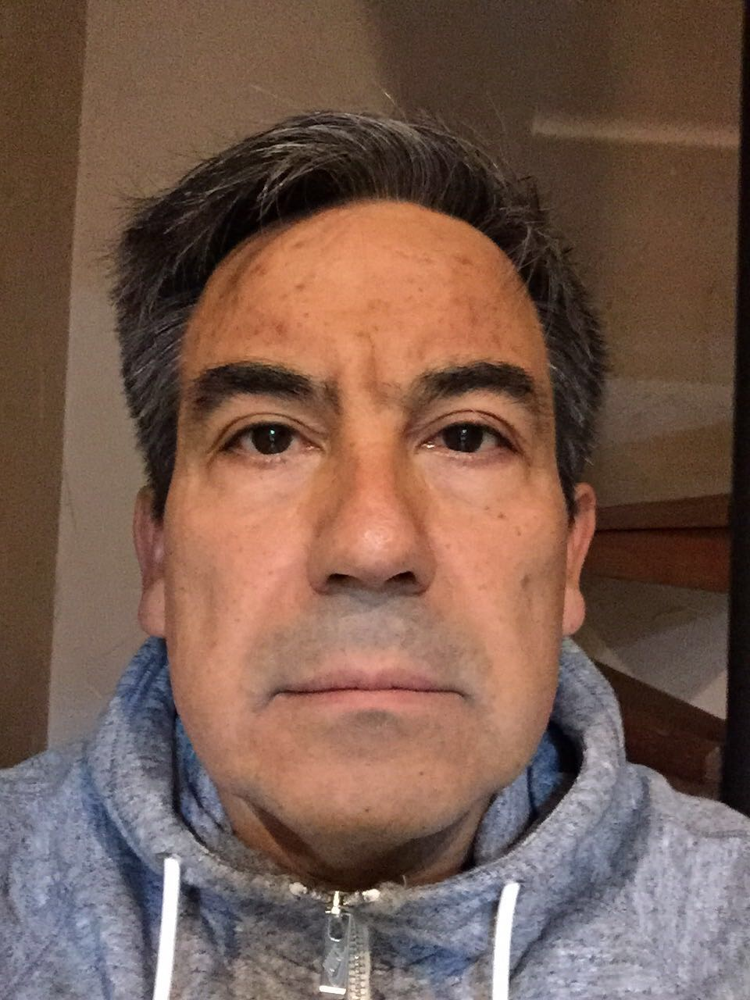

performance piece: the artist (aarón) completed a marathon race in new york city by himself on april 2nd 2017, right after his biological father (víctor) ran the same distance the same day on their shared hometown, santiago de chile. the artist (aarón) completed this performance piece in order to be himself.
aarón and víctor had a very close relationship, starting from aarón's birth in year 1989 and up until year 2013. here is a partial list of their shared interests and characteristics:
after víctor ahuge shift ocurred in 2013, when they stopped living together, after aarón went through a very messy breakup, developed a clinical depression and gained 30 pounds over the years.
the artist is the only son of a marriage that ended in divorce, after which he continued living with his father during the first half of his undergrad at university. they used to go running together and they both were participants in the maraton de santiago for five years in a row.
after going through a very messy breakup that involved
|
name |
víctor montoya-salas |
aarón montoya-moraga |
|
birth date |
january 15, 1964 |
july 03, 1989 |
|
picture |
 | |
|
marathon time |
time for every kilometer |
time for every mile |